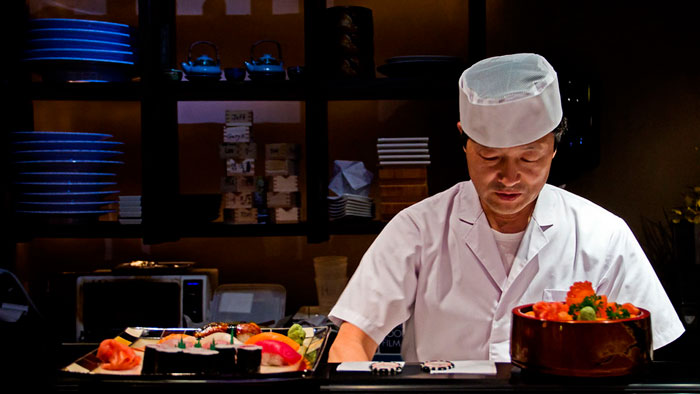
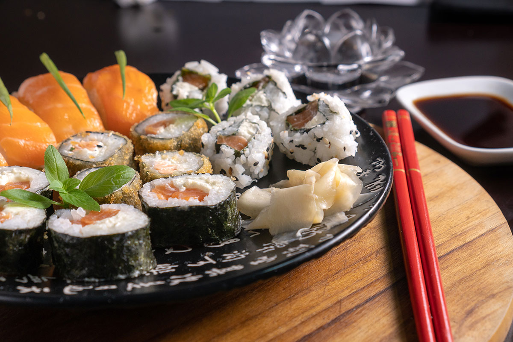

Restaurante Oishi
OISHI é um restaurante japonês que oferece uma experiência gastronômica única. Com pratos
típicos da culinária japonesa, o OISHI é o lugar perfeito para quem busca uma refeição autêntica
e saborosa. O restaurante é conhecido por sua decoração elegante e ambiente acolhedor, que
proporciona uma experiência agradável para todos os clientes. Além disso, o OISHI conta com uma
equipe de chefs experientes e talentosos que preparam cada prato com cuidado e atenção aos
detalhes. Se você está procurando um restaurante japonês de alta qualidade, o OISHI é a escolha
certa.

Chefe Takashi Nakamura
O chef do OISHI é o renomado chef japonês, Takashi Nakamura. Com mais de 20 anos de experiência
na
culinária japonesa, o chef Nakamura é conhecido por sua habilidade em criar pratos autênticos e
deliciosos. Mestre em sushi e sashimi, ele é capaz de preparar pratos que são verdadeiras obras
de
arte. Nosso chef é conhecido por sua paixão pela culinária japonesa e por sua dedicação em
oferecer
a melhor experiência gastronômica possível para seus clientes. Se você está procurando uma
refeição
autêntica e deliciosa, o OISHI é o lugar certo para você.

Restaurante Culinária japonesa
A culinária japonesa é rica e diversa, destacando-se por sua combinação de sabores sutis,
técnicas precisas e apresentação artística.Cada um desses pratos reflete a essência da culinária
japonesa, que valoriza o frescor dos ingredientes, a simplicidade e o respeito pelas estações do
ano. Além disso, a estética na apresentação dos pratos é tão importante quanto o sabor, fazendo
de uma refeição japonesa uma experiência cultural e sensorial.
